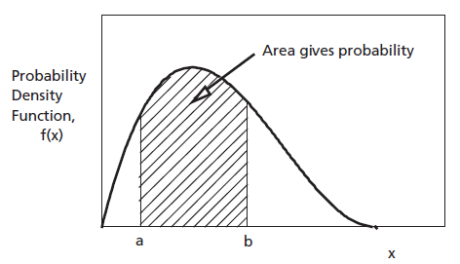
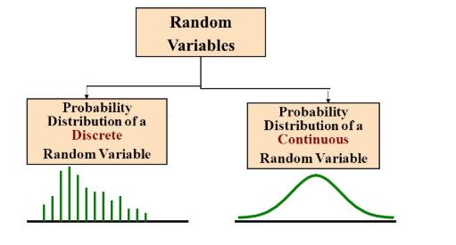
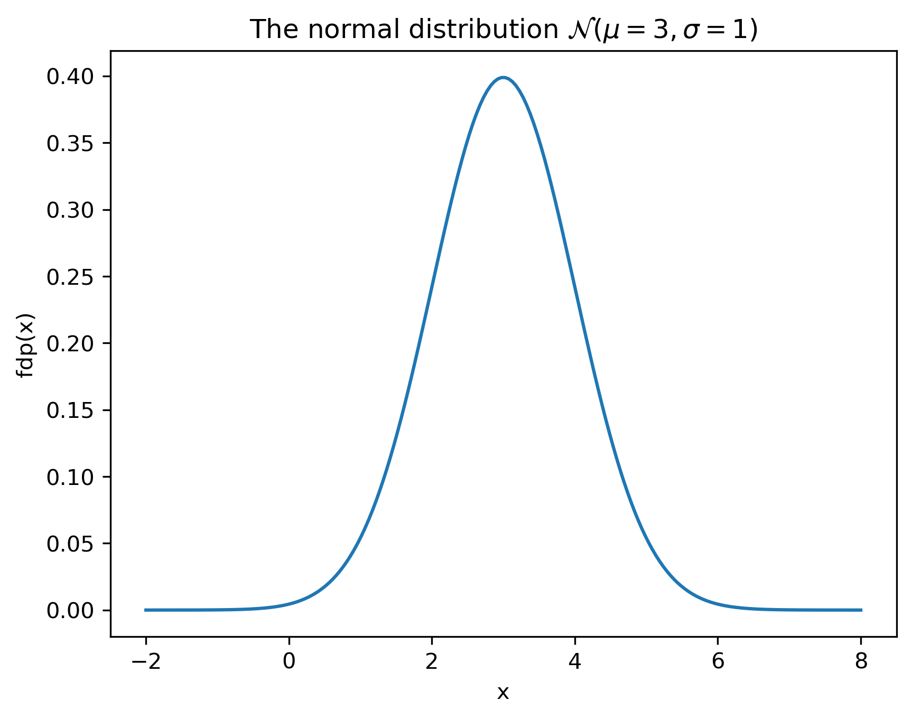
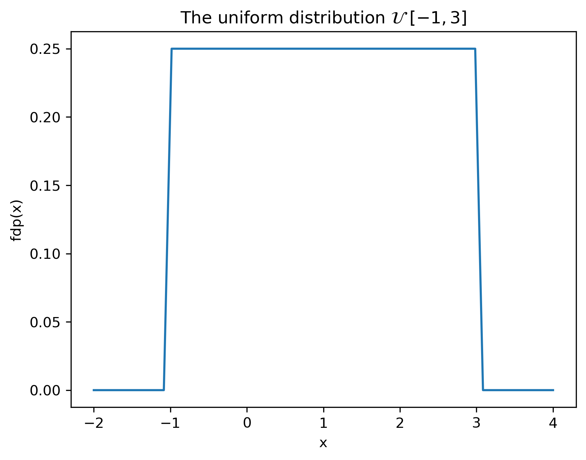
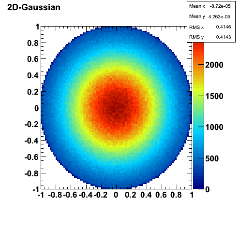

1 Variabile aleatoare
1.1 Definiții
O variabilă aleatoare (v.a.) este o variabilă care denumește o valoare produsă printr-un fenomen aleator. Practic, reprezintă un nume \(X\), \(Y\) etc. atașat unei valori arbitrare.
O realizare a unei variabile aleatoare este o valoare particulară posibilă pe care o poate lua respectiva variabilă.
Spațiul realizărilor \(\Omega\) este mulțimea tuturor realizărilor (mulțimea tuturor valorilor posibile ale unei variabile aleatoare).
O variabilă aleatoare este discretă dacă \(\Omega\) este o mulțime discretă, sau continuă dacă \(\Omega\) este o mulțime compactă.
Variabilele aleatoare modelează semnale afectate de zgomot, cum ar fi un semnal de tensiune într-un circuit electric (zgomot termic etc), sau imagini afectate de zgomot
1.2 Densitate de probabilitate
1.2.1 Pentru variabile aleatoare discrete
Variabilele aleatoare discrete sunt caracterizate prin două funcții: funcția masă de probabilitate (discretă) și funcția de repartiție (care e “în trepte”).
Fie o v.a. discretă \(A\). Se definește funcția masă de probabilitate (FMP) (“probability mass function”, lb.eng.) \(w_A(x)\) ca fiind probabilitatea ca \(A\) să aibă valoarea egală cu \(x\): \[w_A(x)= P \left\{A = x \right\}\]
Funcția de repartiție (FR) \(F_A(x)\) a unei variabile aleatoare \(A\) reprezintă probabilitatea ca \(A\) să aibă valoarea mai mică sau egală cu \(x\): \[F_A(x) = P\left\{ A \leq x \right\}\]
FMP se poate utiliza pentru a calcula probabilitatea unor valori:
Probabilitatea ca \(A\) să aibă valoarea \(v\): \[P\left\{ A = v\right\} = w_A(v)\]
Probabilitatea ca A să fie între valorile \(a\) și \(b\) (inclusiv): \[P\left\{ a \leq A \leq b\right\} = \sum_{x=a}^b w_A(x)\]
Și funcția de repartiție poate fi folosită pentru a calcula diverse probabiități:
Probabilitatea ca \(A\) să aibă valoarea \(v\): \[P\left\{ A = v\right\} = F_A(v) - F_A(v-1)\]
Probabilitatea ca A să fie între valorile \(a\) și \(b\) (inclusiv): \[P\left\{ a \leq A \leq b\right\} = P\left\{ A \leq b\right\} - P\left\{ A \leq a\right\} = F_A(b) - F_A(a-1)\]
Între funcția masă de probabilitate și funcția de repartiție există următoarea legătură. FR este suma cumulativă (un fel de “integrală discretă”) a FMP: \[F_A(x) = \sum_{t = -\infty}^{t = x} w_A(t)\]
FMP mai e numită, în limbaj uzual, “distribuția” variabilei aleatoare.
1.2.2 Pentru variabile aleatoare continue
Variabilele aleatoare continue sunt caracterizate prin două funcții: funcția densitate de probabilitate și funcția de repartiție.
Fie o variabilă aleatoare continuă \(A\). Funcția densitate de probabilitate (FDP) \(w_A(x)\) se definește ca probabilitatea ca valoarea lui \(A\) să fie într-o vecinătate \(\epsilon\) mică în jurul lui \(x\), împărțit la \(\epsilon\) \[w_A(x) = \lim_{\epsilon \to 0}{\frac{P(A \in [x, x+\epsilon])}{\epsilon}}\]
În limbaj informal, densitatea de probabilitate poate fi numită mai simplu “distribuția” variabilei A.
Funcția de repartiție (FR) \(F_A(x)\) se definește la fel ca la variabile discrete, adică reprezintă probabilitatea ca \(A\) să aibă valoarea mai mică sau egală cu \(x\): \[F_A(x) = P\left\{ A \leq x \right\}\]
Între cele două funcții există următoarea legătură. Funcția de repartiție este integrala densității de probabilitate, sau, altfel spus, densitatea de probabilitate este derivata funcției de repartiție: \[F_A(x) = \int_{-\infty}^x w_A(u) \mathrm{d}u\]
\[\begin{split} w_A(x) &= \lim_{\epsilon \to 0}{\frac{P(A \in [x, x+\epsilon])}{\epsilon}} \\ &= \lim_{\epsilon \to 0}{\frac{P(A \leq x+\epsilon) - P(A \leq x)}{\epsilon}} \\ &= \lim_{\epsilon \to 0}{\frac{F_A(x+\epsilon) - F_A(x)}{\epsilon}} \\ &= \frac{\mathrm{d}F_A(x)}{\mathrm{d}x} = F'_A(x) \end{split}\]
Densitatea are o definiție identică în fizică:
\[\rho(x) = \frac{dM}{dV}\]
Densitatea unui punct = derivata masei = masa unei mic volum V în jurul acelui punct împărțit la volumul V, pentru \(V \to 0\).
Densitatea de probabilitate se poate folosi pentru a calcula probabilități, dar numai prin integrare:
Probabilitatea ca A să fie între valorile \(a\) și \(b\) = integrala FDP între \(a\) și \(b\): \[P\left\{ a \leq A \leq b\right\} = \int_a^b w_A(x) dx\]

(sursa: “https://intellipaat.com/blog/tutorial/statistics-and-probability-tutorial/probability-distributions-of-continuous-variables/*)
Probabilitatea ca \(A\) să aibă exact valoarea \(v\) este întotdeauna 0 \[P\left\{ A = v\right\} = \int_v^v w_A(x) dx = 0\]
(în interpretarea grafică, aria de sub un punct este nulă)
Funcția de repartiție se poate folosi de asemenea pentru calculul unor probabilități, în mod direct, la fel ca la variabile discrete:
Probabilitatea ca valoarea lui A să fie între \(a\) și \(b\): \[P\left\{ a \leq A \leq b\right\} = F_A(b) - F_A(a)\]
Nu contează dacă se consideră un interval deschis sau închis: \[P\left\{ a \leq A \leq b\right\} = P\left\{ a < A < b\right\}\]
1.2.3 Interpretarea densității de probabilitate
O variabilă aleatoare continuă poate lua o infinitate de valori posibile. Așadar, probabilitatea ca o variabilă aleatoare continuă \(A\) să ia exact o anume valoare precisă \(x\), dintr-o infinitate de alternative, este întotdeauna zero.
Atunci ce ne spune densitatea de probabilitate \(w_A(x)\)?
Densitatea de probabilitate \(w_A(x)\) într-un punct \(x = x_1\) ne spune probabilitatea ca \(A\) să ia valori în jurul acelei valori \(x_1\), comparativ cu a lua valori în jurul unei alte valori \(x_2\). Ea nu reprezintă probabilitatea unei valori anume, care este mereu zero.
În consecință valorile lui \(w_A(x)\) se pot folosi în mod direct pentru comparații (“e mai probabil ca \(A\) să ia valori în jurul lui 5, sau în jurul lui 7?”), dar pentru calculul unor probabiltăți trebuie să apelăm mereu la integrala sa.
La variabile aleatoare discrete, funcția masă de probabilitate joacă același rol ca densitatea de probabilitate, cu diferența că ea ne dă chiar probabilitatea unei valori \(x\), nu doar probabilitatea de a fi în jurul lui \(x\). De asemenea, fiind funcții discrete, operația de integrare se înlocuiește cu o sumă.

(sursa imaginii: “Probability Distributions: Discrete and Continuous”, Seema Singh, https://towardsdatascience.com/probability-distributions-discrete-and-continuous-7a94ede66dc0)
1.2.4 Proprietăți ale funcțiilor de repartiție și de densitate
Funcția de repartiție:
- FR este mereu pozitivă: \[F_A(x) \geq 0\]
- FR este monoton crescătoare
- FR pornește din 0 și ajunge la valoarea 1: \[F_A(-\infty) = 0 \;\;\;\; F_A(\infty) = 1\]
Densitatea de probabilitate / funcția masă de probabilitate:
- Este pozitivă: \[w_A(x) \geq 0\]
- Integrala/suma pe întreg domeniul este 1 \[\int_{-\infty}^\infty w_A(x) \mathrm{d}x = 1 \;\;\;\; \sum_{x = -\infty}^\infty w_A(x) = 1\]
1.3 Distribuția normală
În cele ce urmează, vom considera numai variabile aleatoare discrete.
Cea mai des întâlnită distribuție în practică este distribuția normală.
Densitatea de probabilitate are expresia matematică: \[w_A(x) = \frac{1}{\sigma \sqrt{2 \pi}} e^{-\frac{(x-\mu)^2}{2 \sigma^2}}\] și depinde de doi parametri:
- media \(\mu\) definește “centrul” funcției
- deviația standard \(\sigma\) controlează “lățimea” funcției
- \(\sigma\) mic = funcție îngustă și înaltă
- \(\sigma\) mare = funcție largă și joasă
import matplotlib.pyplot as plt, numpy as np, math;
mu = 3;
sigma = 1;
x = np.linspace(mu-5*sigma,mu+5*sigma,200);
pdf = 1/(sigma*math.sqrt(2*math.pi))*np.exp(-(x-mu)**2/(2*sigma**2)); #**
plt.plot(x,pdf);
plt.xlabel('x');
plt.ylabel('fdp(x)');
plt.title('The normal distribution $\mathcal{N}(\mu=3,\sigma=1)$');
plt.savefig('fig/01_RandomSignals_DistributionNormal.png', transparent=True, bbox_inches='tight', dpi=300)
plt.close()
Termenul \(\frac{1}{\sigma \sqrt{2 \pi}}\) de la începutul expresiei este o constantă care asigură normalizarea, adică faptul că probabilitatea totală (integrala totală) este 1: \[\int_{-\infty}^\infty w_A(x) \mathrm{d}x = 1\]
Distribuția normală se notează cu \(\mathcal{N}(\mu, \sigma^2)\).
Când \(\mu=0\) și \(\sigma=1\) avem distribuția normală standard.
Cum interptetăm distribuția normală? Fie o variabilă aleatoare \(A \sim \mathcal{N}(\mu, \sigma^2)\) (\(A\) ia valori conform distribuției normale cu media \(\mu\) și deviația \(\sigma\)). Putem spune următoarele:
- \(A\) poate avea orice valoare \(x \in \mathbb{R}\), întrucât \(w_A(x) > 0, \forall x \in \mathbb{R}\) (nici o valoare nu este a priori exclusă);
- Valorile cele mai probabile ale lui \(A\) sunt în jurul mediei \(\mu\);
- Probabilitatea unor valori \(x\) e mai mică cu cât \(x\) este mai îndepărtat de centrul \(\mu\), datorită termenului \(-(x - \mu)^2\) de la exponent
Distribuția exprimă așadar o preferință pentru valori apropiate de \(\mu\), cu probabilitate din ce în ce mai scăzută la valori mai depărtate de \(\mu\).
1.4 Distribuția uniformă
Densitatea de probabilitate uniformă este o funcție constantă între două limite \(a\) și \(b\):
\[w_A(x) = \begin{cases} \frac{1}{b-a}, & x \in [a, b] \\ 0, &\textrm{elsewhere} \end{cases}\]
Se notează cu \(\mathcal{U} \;[a, b]\).
import matplotlib.pyplot as plt, numpy as np, math
a = -1
b = 3
x = np.linspace(-2, 4, 60)
pdf = np.hstack( (np.zeros((10)), 1/(b-a)*np.ones((40)), np.zeros((10)))) #*
plt.plot(x,pdf)
plt.xlabel('x')
plt.ylabel('fdp(x)')
plt.title('The uniform distribution $\mathcal{U}\;[-1,3]$')
plt.savefig('fig/01_RandomSignals_DistributionUniform.png', transparent=True, bbox_inches='tight', dpi=300)
plt.close()
Cum interpretăm distribuția uniformă?
- Sunt posibile doar valori din intervalul \([a, b]\), restul sunt absolut excluse;
- Toate valorile din intervalul \([a, b]\) au aceeași șansă.
“Înălțimea” funcției este \(\frac{1}{b-a}\) pentru a se asigura normalizarea (aria totală este 1)
1.5 Calculul probabilității pentru distribuția normală
Probabilitatea ca \(A\) sa aibă valori între \(a\) și \(b\) este \(\int_a^b w_A(x) dx\), pentru o distribuție continuă. Însă, pentru distribuția normală această integrală nu se poate calcula prin formula algebrice (este funcție ne-elementară).
În schimb, pentru calcul se folosesc algoritmi numerici, pe baza funcției de eroare \(erf(z)\) (“the error function”): \[erf(z) = \frac{2}{\sqrt{\pi}} \int_0^z e^{-t^2} dt\]
Valorile funcției erf() sunt tabelate sau se calculează numeric cu algoritmi specializati. De ex., pe Google, căutați \(erf(0.5)\)
Funcția de repartiție a unei distribuții normale oarecare \(\mathcal{N}(\mu, \sigma^2)\) se poate calcula ca: \[F_A(X) = \frac{1}{2}(1 + erf(\frac{x - \mu}{\sigma \sqrt{2}}))\]
Alte valori folositoare:
- \(erf(-\infty) = -1\)
- \(erf(\infty) = 1\)
În multe aplicații, anomaliile într-un set de valori se definesc ca fiind valorile aflate la peste \(3 \sigma\) distanță față de medie. De ce oare?
1.6 Medii statistice
Variabilele aleatoare sunt caracterizate prin medii statistice (“momente”), care caracterizează densitatea de probabilitate.
1.6.1 Valoarea medie
Valoarea medie (momentul de ordin 1) a unei variabila aleatoare \(A\), notată în mod uzual cu \(\mu\), \(E\lbrace A \rbrace\) sau \(\overline{A}\), se definește astfel:
Pentru v.a. continue: \[\overline{A} = E\{A\} = \int_{-\infty}^{\infty} x \cdot w_A(x) dx\]
Pentru v.a. discrete: \[\overline{A} = E\{A\} = \sum_{x=-\infty}^{\infty} x \cdot w_A(x)\]
Termenul în limba engleză este “expected value”.
In termeni informali, valoarea medie este o sumă în care apar toate valorile posibile \(x\) înmulțite cu probabilitatea fiecăreia (pentru cazul continuu, folosim integrala și densitatea de probabilitate, cu aceeași semnificație).
Ce semnificație are, practic, valoarea medie a unei variabile aleatoare? Informal, ea ne dă valoarea numerică centrală în jurul căreia “se învârt” toate valorile pe care le poate lua \(A\). Ca interpretare grafică, de multe ori ea este situată “pe la mijlocul” distribuției.
Valorile care au probabilitate / densitate de probabilitate ridicată “trag” valoarea medie înspre ele.
Pentru distribuții cu formă simetrică (de ex. distribuția normală, distribuția uniformă), valoarea medie este valoarea centrală a funcției. Ambele laturi ale funcției “trag” valoare medie înspre ele în mod egal, valoarea medie rămâne la mijloc.
Dacă avem de-a face cu un semnal \(x(t)\) sau \(x[n]\) a cărui valori respectă o distribuție \(w_A(x)\), valoarea medie a distribuției va fi componenta continuă a semnalului respectiv.
Alte câteva interpretări:
Dacă am avea \(N \to \infty\) valori aleatoare conform distribuției respective, valoarea medie ar fi media aritmentică a tuturor acestor valori;
Dacă trebuie să prezicem valoarea unei variabile aleatoare \(X\), și plătim un cost proporțional cu pătratul erorii pe care o facem, \((u - X)^2\), valoarea medie \(\mu\) este cea mai bună alegere, întrucât minimizează costul global: \[\mu = \arg\min_u \int_{-\infty}^{\infty} (u - x)^2\cdot w(x) dx\]
- Demonstrație: la tablă: derivare, derivata = 0
Pentru distribuția normală \(\mathcal{N}(\mu, \sigma)\), valoarea medie este chiar parametrul \(\mu\): \[\overline{X} = \mu\]
Pentru o distribuție uniformă \(\mathcal{U} [a, b]\), valoarea medie este valoarea de la mijlocul intervalului: \[\overline{X} = \frac{a + b}{2}\]
Calculul valorii medii este o operație liniară. Pentru două variabile aleatoare independente \(A\) și \(B\), și oricare două numere reale \(c_1\) și \(c_2\), avem: \[E\{c_1A + c_2B\} = c_1E\{A\} + c_2E\{B\}\]
sau: \[E\{cA\} = c E\{A\}, \forall c \in \mathbb{R}\] \[E\{A + B\} = E\{A\} + E\{B\}\]
1.6.2 Valoarea pătratică medie
Valoarea pătratică medie (momentul de ordin 2) reprezintă valoarea medie a pătratelor valorilor unei variabile \(A\).
Pentru variabile aleatoare continue: \[\overline{A^2} = E\{A^2\} = \int_{-\infty}^{\infty} x^2 \cdot w_A(x) dx\]
Și pentru cele discrete: \[\overline{A^2} = E\{A^2\} = \sum_{-\infty}^{\infty} x^2 \cdot w_A(x)\]
Valoarea pătratică medie are o interpretare legată de magnitudinea valorilor posibile. Dacă avem de-a face cu un semnal \(x(t)\) sau \(x[n]\) a cărui valori sunt generate de o distribuție \(w_A(x)\), valoarea pătratică medie a distribuției va fi puterea medie a semnalului respectiv.
1.6.3 Varianța
Varianța (momentul centrat de ordin 2) reprezintă valoarea pătratică medie a abaterilor față de valoarea medie.
Pentru variabile aleatoare continue: \[\sigma^2 = \overline{\left\{ A - \mu \right\}^2} = \int_{-\infty}^{\infty} (x-\mu)^2 \cdot w_A(x) dx\]
Pentru variabile aleatoare discrete: \[\sigma^2 = \overline{\left\{ A - \mu \right\}^2} = \sum_{-\infty}^{\infty} (x-\mu)^2 \cdot w_A(x)\]
Cu alte cuvinte, din valorile variabilei aleatoare \(A\) scădem mereu valoarea medie, obținând astfel valori centrate pe \(0\) (media lor devine \(0\)), și calculăm apoi varianța a ceea ce obținem.
Rădăcina pătrată \(\sigma\) a varianței unei distribuții se numește deviație standard.
Varianța, sau deviația standard, ne spun cat de mult pot fluctua valorile în jurul valorii medii.
- varianță mică: valorile deviază puțin în jurul mediei, sunt concentrate în jur;
- varianță mare: valorile deviază mult de la medie.
- Dacă avem de-a face cu un semnal \(x(t)\) sau \(x[n]\) a cărui valori sunt generate de o distribuție \(w_A(x)\), varianța va fi puterea medie a componentei alternative a semnalului respectiv (adică puterea medie a semnalului din care am scăzut componenta continuă).
1.6.4 Legătura între cele trei mărimi statistice
Pentru orice distribuție, cele trei mărimi statistice satisfac relația următoare: \[\begin{split} \sigma^2 &= \overline{\left\{ A - \mu \right\}^2} \\ &= \overline{A^2 - 2 \cdot A \cdot \mu + \mu^2} \\ &= \overline{A^2} - 2 \mu \overline{A} + \mu^2 \\ &= \overline{A^2} - \mu^2 \end{split}\]
Dacă avem de-a face cu un semnal \(x(t)\) sau \(x[n]\) a cărui valori urmează o distribuție \(w_A(x)\), relația poate fi interpretată în sens energetic:
- \(\overline{A^2}\) este puterea totală a semnalului
- \(\mu^2\) este puterea componentei continue
- \(\sigma^2\) este puterea componentei alternative
- puterea totată a semnalului = puterea componentei continue + puterea componentei alternative
1.7 Operații cu variabile aleatoare
Fie o variabilă aleatoare \(A\), și fie \(D = c + A\), unde \(c\) este un număr real.
\(D\) este tot o variabilă aleatoare, a cărui distribuție \(w_D(x)\) este distribuția lui \(A\) “translată” cu \(c\) la dreapta:
\[w_D(x) = w_A(x - c)\]
Suma a două sau mai multe variabile aleatoare independente este tot o variabilă aleatoare, a cărei densitate de probabilitate este convoluția densităților termenilor.
Fie două variabile aleatoare \(A\) și \(B\), independente. Dacă \(C = A + B\), atunci:
\[w_C(x) = w_A(x) \star w_B(x)\]
Pentru cazul particular cand \(A\) și \(B\) sunt variabile normale cu \(\mathcal{N}(\mu_A, \sigma_A^2)\) și \(\mathcal{N}(\mu_B, \sigma_B^2)\), atunci suma lor \(C\) are tot o distribuție normală \(\mathcal{N}(\mu_C, \sigma_C^2)\), având media lui \(C\) egală cu suma mediilor lui \(A\) și \(B\):
\[\mu_C = \mu_A + \mu_B\]
iar varianța egală cu suma varianțelor:
\[\sigma_C^2 = \sigma_A^2 + \sigma_B^2\]
În general, o funcție aplicată unei variabile aleatoare produce o altă variabilă aleatoare, cu altă distribuție, posibil cu totul diferită de cea inițială.
Variabilele A, B, C, D nu sunt însă independente, întrucât o anumită valoare a uneia implică automat și valoarea celorlalte.
1.8 Sisteme de mai multe variabile aleatoare
Fie un sistem cu două variabile aleatoare continue, \(A\) și \(B\). Care este probabilitatea ca \(A\) să ia valori în jurul lui \(x\) ȘI B să ia valori în jurul lui \(y\)?
Distribuția valorilor perechii \((A,B)\) este descrisă de o densitatea de probabilitate comună \(w_{AB}(x,y)\), și de o funcția de repartiție comună \(F_{AB}(x,y)\).
Funcția de repartiție comună se definește ca: \[F_{AB}(x,y) = P_{AB}\left\{ A \leq x \cap B \leq y \right\}\]
Densitatea de probabilitate comună: \[w_{AB}(x,y) = \frac{\partial^2 F_{AB}(x,y)}{\partial x \partial y}\]
Densitatea de probabiliate comună ne dă probabilitatea ca perechea \((A,B)\) să aibă valoarea într-o vecinătate a \((x,y)\)
Cele două funcții se definesc similar și pentru variabile discrete, înlocuind integralele cu sume: \[w_{AB}(x,y) = P\left\{ A = x \cap B = y \right\}\]
1.8.1 Variabile independente
Două variabile \(A\) și \(B\) sunt independente dacă se respectă relația: \[w_{AB}(x,y) = w_A(x) \cdot w_B(y)\]
Ca interpretare, acest lucru înseamnă că valoarea uneia nu influențează în nici un fel valoarea celeilalte.
Relația este valabilă și pentru funcția de repartiție, atât pentru variabile continue cât și pentru discrete, și se extinde similar pentru cazul în care sunt mai mult de două variabile.
1.9 Distribuția normală multivariată
Distribuția normală se poate extinde în mod natural la vectori cu dimensiune \(N\).
Pentru un vector \(\mathbf{x}\) de dimensiune N \[\mathbf{x} = [x_1, x_2, ... x_N]\] distribuția se definește ca: \[w_A(\mathbf{x})= \frac{1}{\sqrt{(2\pi)^N |\Sigma|}} e^{-\frac{1}{2}(\mathbf{x} - \boldsymbol{\mu})^T\Sigma^{-1}(\mathbf{x} - \boldsymbol{\mu})}\]
Funcția are doi parametri matriciali:
- media \(\boldsymbol{\mu} = [\mu_1, \mu_2, ... \mu_N]\) este un vector de dimensiune \(N\) care definește “centrul” funcției;
- matricea de covarianță \(\Sigma\) este o matrice $ N N$ care definește orientarea și forma eliptică a funcției.
Distribuția normală multivariată are forma de tipul unui “munte” elipsoid, pentru care media \(\boldsymbol{\mu}\) reprezintă coordonatele vârfului central. Matricea de covarianță \(\Sigma\) determina forma “muntelui”, în felul următor:
- Matrice are \(N\) vectori proprii \(\mathbf{e_i}\) care dau direcțiile ortogonale ale axelor care definesc elipsa;
- Cele \(N\) valori proprii \(\lambda_i\) controlează extinderea elipsei de-a lungul fiecărei axe.
1.9.1 Caz particular: componente independente
În cazul în care matricea de covarianță este o matrice diagonală:
\[\Sigma = \begin{bmatrix} \sigma^2_1 & 0 & 0 & \cdots & 0 \\ 0 & \sigma^2_2 & 0 & \cdots & 0 \\ 0 & 0 & \sigma^2_3 & \cdots & 0 \\ \vdots & \vdots & \vdots & \ddots & \vdots \\ 0 & 0 & 0 & \cdots & \sigma^2_N \\ \end{bmatrix}\]
distribuția multiavariată se descompune ca un produs de distribuții individuale, ceea ce reflectă faptul că componentele vectorului \(\mathbf{x}\) sunt independente:
\[\begin{split} w_A(\mathbf{x}) &= \frac{1}{\sigma_1 \cdot ... \cdot \sigma_N \sqrt{(2\pi)^N}} e^{(-\frac{(\mathbf{x_1} - \boldsymbol{\mu_1})^2}{2\sigma^2_1}) \cdot (-\frac{(\mathbf{x_2} - \boldsymbol{\mu_2})^2}{2\sigma^2_2}) \cdot \dots (-\frac{(\mathbf{x_N} - \boldsymbol{\mu_N})^2}{2\sigma^2_N})} \\ &=\frac{1}{\sigma_1 \sqrt{(2\pi)}} e^{-\frac{(\mathbf{x_1} - \boldsymbol{\mu_1})^2}{2\sigma^2_1}} \cdot \frac{1}{\sigma_2 \sqrt{(2\pi)}} e^{-\frac{(\mathbf{x_2} - \boldsymbol{\mu_2})^2}{2\sigma^2_2}} \cdot \dots \cdot \frac{1}{\sigma_N \sqrt{(2\pi)}} e^{-\frac{(\mathbf{x_N} - \boldsymbol{\mu_N})^2}{2\sigma^2_N}} \\ &=w_1(x_1) \cdot w_2(x_2) \cdot \dots \cdot w_N(x_N) \end{split}\]
Acest lucru înseamnă, practic, că fiecare componentă \(x_k\) din vectorul \(\mathbf{x}\) este independentă de toate celelalte și respectă o distribuție normală cu media \(\mu_k\) și varianța \(\sigma^2_k\). Cu alte cuvinte:
\[\mathcal{N}(\boldsymbol{\mu}, \Sigma) = \mathcal{N}(\mu_1, \sigma_1) \cdot \mathcal{N}(\mu_2, \sigma_2) \cdot \dots \cdot \mathcal{N}(\mu_N, \sigma_N)\]
1.9.2 Caz particular: distribuție izotropă
În cazul în care matricea de covarianță este de forma unei matrici matricea unitate, având aceeași valoare \(\sigma\) pe toate liniile: \[\Sigma = \sigma^2 \mathbf{I}_N\]
avem o distribuție normală multivariată izotropă:
Termenul “izotrop” înseamnă “cu aceleași proprietăți în orice direcție” și se referă la forma circulară a funcției.
\[\begin{split} w_A(\mathbf{x}) &= \frac{1}{\sigma^N \sqrt{(2\pi)^N}} e^{-\frac{1}{2}(\mathbf{x} - \boldsymbol{\mu})^T \Sigma^{-1} (\mathbf{x} - \boldsymbol{\mu})} \\ &=\frac{1}{\sigma^N \sqrt{(2\pi)^N}} e^{-\frac{ \sum_i (x_i - \mu_i)^2 }{2 \sigma^{2N}}} \\ \end{split}\]
În acest caz, toata componentele \(x_k\) sunt independente și respectă fiecare o distribuție normală cu medie \(\mu_k\), dar cu aceeași varianță \(\sigma^2\).
Se observă că în acest caz valoarea densității de probabilitate într-un punct \(\mathbf{x}=[x_1,...x_N]\) depinde de distanța de la punctul respectiv la punctul central \(\boldsymbol{\mu} = [\mu_1,...\mu_N]\).
Distanța Euclideană (geometrică) între 2 vectori N-dimensionali se definește astfel:
\[d(\mathbf{u},\mathbf{v}) = \| \mathbf{u}-\mathbf{v} \| = \sqrt{(u_1-v_1)^2+...+(u_N - v_N)^2}\]
Cazuri particulare în funcție de dimensiunea \(N\):
- Unidimensional: \(\|\mathbf{u}-\mathbf{v}\| = |u-v|\)
- 2D: \(\|\mathbf{u}-\mathbf{v}\| = \sqrt{(u_1 - v_1)^2 + (u_2 - v_2)^2}\)
- 3D: \(\|\mathbf{u}-\mathbf{v}\| = \sqrt{(u_1 - v_1)^2 + (u_2 - v_2)^2 + (u_3 - v_3)^2}\)
- …
- N-dimensional: \(\|\mathbf{u}-\mathbf{v}\| = \sqrt{\sum_{i=1}^N(u_i - v_i)^2}\)
Aceeași relație se poate extinde și pentru semnale continue, văzute ca vectori cu o infinitate de puncte unul lângă altul:
În cazul unei distribuții normale multivariate izotrope, densitatea de probabilitate într-un punct depinde de pătratul distanței Euclidiene față de media \(\boldsymbol{\mu} = [\mu_1,...\mu_N]\)
- Valoarea maximă este chiar in punctul \(\boldsymbol{\mu}\)
- Puncte aproapiate de \(\mu\) au probabilitate mai mare
- Puncte mai depărtate de \(\mu\) au probabilitate mai redusă
- Două puncte la aceeași distanță de \(\mu\) au aceeași probabilitate
Distribuția normală 2D, izotropă, este prezentată mai jos:

Vedere de sus:

În această figură, \(\mu = (0,0)\). Se observă că probabilitatea scade pe măsură ce crește distanța față de centru, în cercuri concentrice (simetric), întrucât e vorba de o distribuție izotropă. În cazul general, în loc de cercuri concentrice am fi avut elipse concentrice.